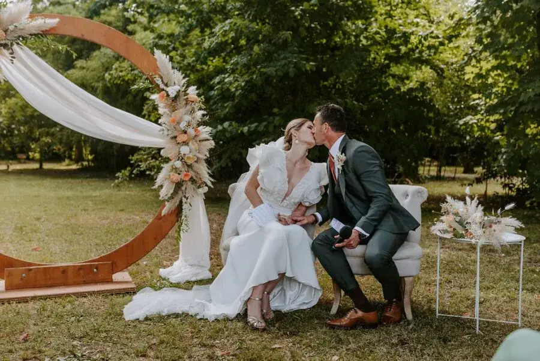
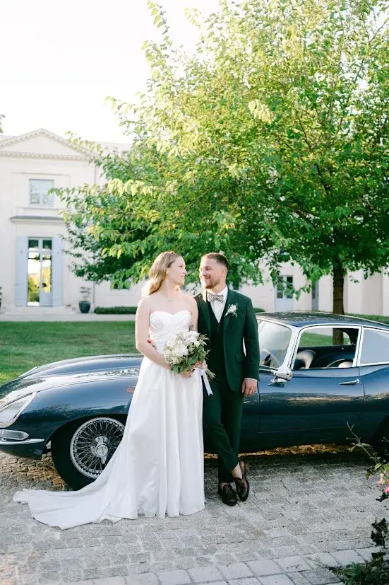
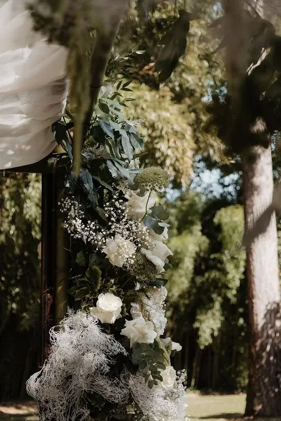
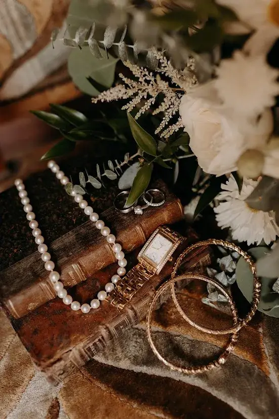
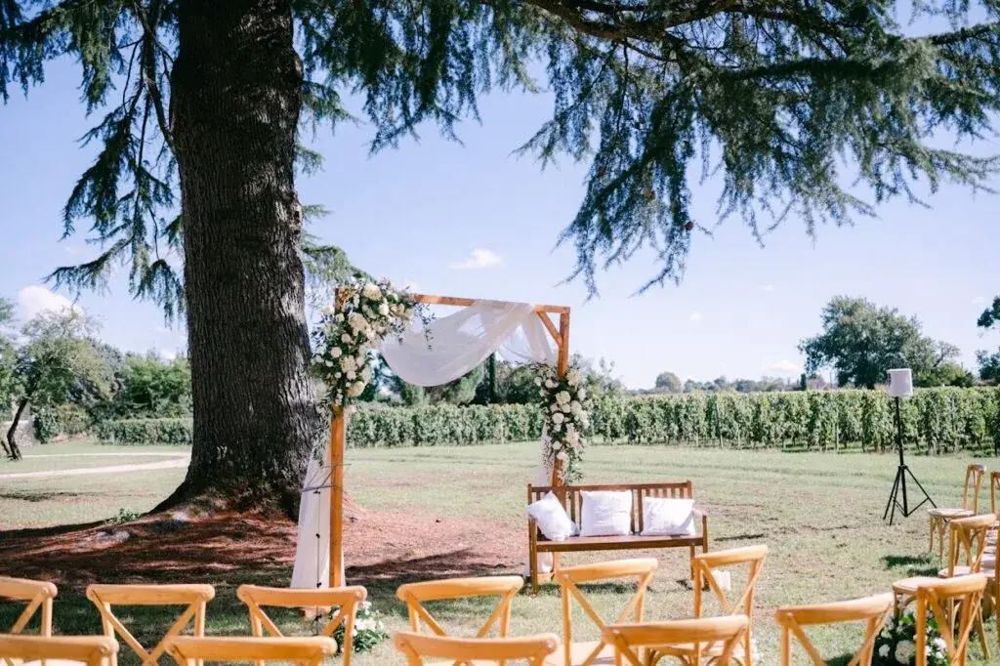
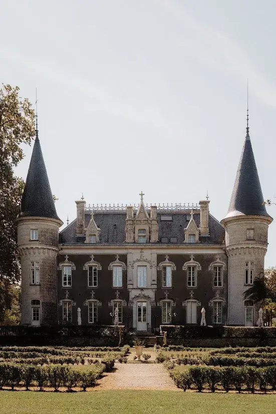

Organiser un mariage est une aventure aussi excitante que émouvante, mais elle peut rapidement devenir source de stress si le budget n’est pas clairement défini dès le départ. Entre les envies, mes inspirations Pinterest, les conseils des proches et les réalités des prestataires, il est facile de se laisser emporter et de perdre le contrôle des dépenses. Pourtant, définir un budget de mariage précis est l’une des étapes les plus importantes pour avancer sereinement dans l’organisation, que vous planifiez votre mariage à Bordeaux, dans les vignobles de Nouvelle-Aquitaine ou ailleurs dans la région.
Déterminer votre budget dès le début vous permet de fixer un cadre clair, de faire les bons choix et surtout de prioriser ce qui compte vraiment pour vous : un lieu exceptionnel, un traiteur haut de gamme, une décoration élégante ou encore une ambiance mémorable. C’est aussi le meilleur moyen d’éviter les mauvaises surprises financières à quelques semaines du jour J, moment où les paiements s’accélèrent et où chaque détail compte.
Un budget bien construit vous aide à garder une vision réaliste, à répartir vos dépenses intelligemment et à organiser votre mariage avec plus de sérénité. Voici donc un guide étape par étape pour vous aider à établir un budget réaliste, cohérent et parfaitement adapté à vos envies.
Évaluer vos ressources financières
Avant même de penser aux fleurs, au lieu de réception ou à la robe, il est essentiel de savoir combien vous pouvez réellement investir dans votre mariage. Cette étape est souvent négligée, pourtant elle constitue la base d’une organisation sereine et cohérente. Un budget bien défini dès le départ permet d’éviter les frustrations, les choix difficiles de dernière minute et surtout les mauvaises surprises.
Commencez par faire le point sur vos économies et vos ressources actuelles afin de déterminer ce que vous pouvez mobiliser sans mettre en péril vos finances personnelles. L’objectif n’est pas de tout dépenser, mais de fixer une somme réaliste, en accord avec votre situation et vos priorités.
Ensuite, clarifiez dès le début les contributions éventuelles de vos familles ou proches. Certaines aides peuvent être proposées spontanément, mais il est important d’en discuter clairement pour éviter tout malentendu ou toute pression involontaire. Savoir qui finance quoi vous aidera à construire un budget plus précis et à faire des choix plus justes.
Enfin, n’oubliez jamais de prévoir une marge de sécurité d’environ 10 à 15 %. Les imprévus sont fréquents lors d’un mariage : un prestataire supplémentaire, une météo capricieuse qui impose une solution de repli, des frais de transport, ou encore des petits achats de dernière minute. Cette réserve vous permettra de rester sereins et de profiter pleinement de vos préparatifs sans stress inutile.


Définir vos priorités
Chaque couple a ses propres envies et sa propre vision du mariage idéal. Pour certains, la robe ou le photographe est un élément incontournable, tandis que pour d’autres, c’est avant tout le lieu de réception, l’ambiance ou le repas qui doit être exceptionnel. Il n’y a pas de bonne ou de mauvaise priorité : l’essentiel est que votre budget reflète ce qui compte vraiment pour vous.
Prenez donc le temps de lister tous les postes importants (traiteur, décoration, musique, tenue, fleurs, cérémonie…) puis classez vos envies par ordre d’importance. Cette méthode vous permettra de répartir votre budget de manière plus intelligente, en investissant davantage sur ce qui fera la différence dans votre journée et dans vos souvenirs.
Il est aussi essentiel d’accepter une certaine flexibilité. Certains postes secondaires peuvent être ajustés sans impacter l’expérience globale : réduire légèrement la décoration florale, choisir un gâteau plus simple ou limiter certains extras. Cela vous permettra de rester dans les limites de votre budget tout en conservant l’essentiel : un mariage à votre image, cohérent et sans stress financier.
Répartir le budget par postes
Pour mieux anticiper vos dépenses et garder une vision claire de votre organisation, il est fortement recommandé de répartir votre budget en différentes catégories. Cela vous permet de savoir où va votre argent, d’éviter les oublis et surtout de mieux contrôler vos choix au fur et à mesure des réservations, que vous soyez à Bordeaux, dans les vignobles de Nouvelle-Aquitaine, ou ailleurs dans la région.
En général, le lieu de réception représente souvent la part la plus importante du budget, car il inclut parfois des prestations annexes comme le mobilier, l’hébergement ou la location d’espaces spécifiques. Vient ensuite le traiteur, accompagné des boissons, qui constitue souvent l’un des plus gros postes, surtout lorsque le nombre d’invités augmente.
Les tenues des mariés (robe, costume, accessoires), ainsi que le photographe et le vidéaste, représentent également des dépenses significatives. Ce sont des éléments essentiels car ils participent autant à l’expérience du jour J qu’aux souvenirs que vous garderez toute votre vie. Il est donc important de prévoir une enveloppe adaptée à la qualité de prestation que vous souhaitez.
La décoration, les fleurs et l’animation musicale (DJ ou groupe live) doivent aussi être bien anticipées, car ce sont eux qui créent l’ambiance et l’identité visuelle de votre mariage. Ce sont souvent des postes où l’on peut facilement dépasser le budget si l’on ne fixe pas de limites dès le départ.
Enfin, n’oubliez pas de prévoir une enveloppe pour la papeterie, les invitations, les cadeaux invités, ainsi qu’une marge dédiée aux imprévus. Même avec une organisation parfaite, il y a toujours de petites dépenses de dernière minute.
Cette répartition n’est bien sûr pas figée : elle doit être ajustée selon vos priorités, votre style de mariage et la taille de votre événement. L’objectif est de construire un budget réaliste, équilibré et surtout adapté à votre vision du jour J.


Estimer les coûts
Une fois les grandes lignes de votre budget définies, il est temps de passer à une étape essentielle : se renseigner sur les prix réels du marché. C’est souvent à ce moment-là que l’on réalise que certaines prestations coûtent plus (ou parfois moins) que ce que l’on imaginait. Cette phase vous permet de construire un budget concret et d’éviter les mauvaises surprises.
Commencez par comparer les tarifs des lieux de réception et des traiteurs, car ce sont généralement les postes les plus importants. Prenez le temps de demander plusieurs devis et de vérifier précisément ce qui est inclus : mobilier, personnel, boissons, droit de bouchon, horaires supplémentaires, etc.
Ensuite, consultez les portfolios et les devis des prestataires comme les photographes, fleuristes, musiciens ou DJ, afin de mieux comprendre les différences de prix selon l’expérience, le style et la durée de prestation. Cela vous aidera à choisir en fonction de vos attentes, sans dépasser votre enveloppe.
Pensez également aux frais annexes, souvent oubliés : taxes, frais de service, location de matériel, transport, hébergements, ou encore les éventuels pourboires. Ce sont de petits montants qui, additionnés, peuvent vite faire grimper la facture finale, surtout si votre mariage se déroule à Bordeaux ou ailleurs en Nouvelle-Aquitaine.
Cette étape est indispensable pour vérifier si votre budget initial est réellement réaliste, ou s’il doit être ajusté. Elle vous permet aussi de faire des choix plus stratégiques et de garder le contrôle tout au long de l’organisation.
Suivre et ajuster le budget
Pour garder le contrôle et rester organisé tout au long des préparatifs, il est essentiel de suivre votre budget de manière régulière. Le plus simple est d’utiliser un tableau Excel, Google Sheets ou une application dédiée au mariage afin de noter chaque dépense en temps réel : acomptes versés, soldes à payer, options ajoutées, frais supplémentaires… Cela vous permet d’avoir une vision claire et précise de votre budget à chaque étape.
Ce suivi est indispensable pour éviter les dépassements, surtout lorsque plusieurs prestataires sont réservés sur plusieurs mois. En voyant rapidement où vous en êtes, vous pourrez ajuster vos décisions avant qu’il ne soit trop tard, et faire des choix plus stratégiques.
Il est aussi important de garder en tête que le budget n’est jamais totalement figé. Les devis peuvent évoluer, des coups de cœur peuvent surgir (et faire grimper la facture), ou certains imprévus peuvent apparaître : météo, invités supplémentaires, frais de transport, heures supplémentaires, etc. C’est pourquoi il est essentiel de prévoir une certaine flexibilité dans votre organisation.
Enfin, prenez le temps de faire régulièrement un point avec votre partenaire. Réévaluer ensemble certains postes, comparer vos priorités et ajuster certaines dépenses si nécessaire vous aidera à rester dans la limite globale, tout en construisant un mariage qui vous ressemble vraiment.

Économiser sans sacrifier vos rêves
Bonne nouvelle : il est tout à fait possible d’organiser un mariage magnifique sans exploser son budget. L’essentiel est de faire les bons choix, au bon moment, tout en gardant en tête vos priorités. Économiser ne signifie pas renoncer, mais plutôt optimiser certains postes pour investir davantage sur ce qui compte réellement pour vous.
Tout d’abord, choisir une date en dehors de la haute saison (mai à septembre) peut réduire significativement les coûts. Un mariage en automne ou en hiver, ou même en semaine, permet souvent de bénéficier de tarifs plus avantageux sur les lieux de réception et certains prestataires très demandés à Bordeaux ou en Nouvelle-Aquitaine.
Ensuite, opter pour un lieu qui propose une formule complète (avec traiteur, mobilier ou décoration incluse) peut être un excellent moyen de faire des économies. Ces prestations regroupées permettent souvent de réduire les frais de location supplémentaires et simplifient aussi la gestion de l’organisation.
Privilégier des prestataires locaux est également une stratégie intelligente. En plus de soutenir les professionnels de votre région, cela limite les frais de déplacement, d’hébergement ou de transport de matériel, qui peuvent vite faire grimper la facture finale.
Enfin, certaines touches personnelles peuvent apporter beaucoup de charme tout en réduisant les dépenses. Les invitations, une partie de la décoration ou même les cadeaux invités peuvent être réalisés en DIY, à condition de bien anticiper le temps nécessaire. Ces détails faits maison apportent une vraie authenticité et rendent votre mariage encore plus unique.
Avec un peu d’astuce et de flexibilité, vous pouvez donc créer un mariage à votre image, élégant et mémorable, tout en respectant votre budget.
En Bref...
Définir son budget de mariage est une étape essentielle pour transformer vos rêves en réalité, tout en gardant sérénité et contrôle sur vos finances. En évaluant vos ressources, en priorisant vos envies, en répartissant vos dépenses par postes et en suivant vos dépenses avec rigueur, vous pourrez planifier un mariage mémorable, à votre image, sans mauvaises surprises, que vous célébriez votre union à Bordeaux ou ailleurs en Nouvelle-Aquitaine.
Une bonne préparation, combinée à une vision claire de vos priorités et une petite marge pour les imprévus, est la clé d’un grand jour parfaitement réussi, où vous pourrez profiter de chaque instant sans stress.
Lovely Day Event c'est plusieurs types de prestations
L'organisation de mariage
Je vais intervenir sur toutes les étapes de vos préparatifs et vous guider dans vos choix. Je suis force de proposition pour que votre mariage ne ressemble qu’à vous.
Coordination le jour J
Je serai le chef d’orchestre pour gérer les différents prestataires, la mise en place de votre décoration et le déroulement de cette belle journée.
Décoration de mariage
Créative et passionnée, je suis certifiée Wedding Designer et je conçois une ambiance scénographique qui correspond au thème de votre mariage. La décoration est comprise dans la formule Signature, ou proposée en option avec la coordination du jour J.